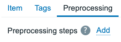
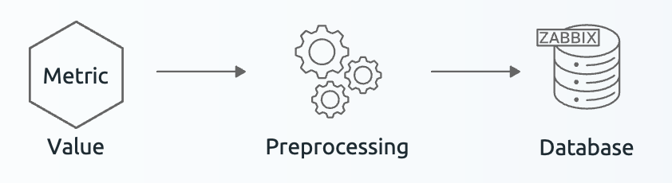
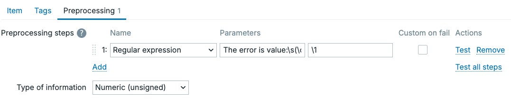
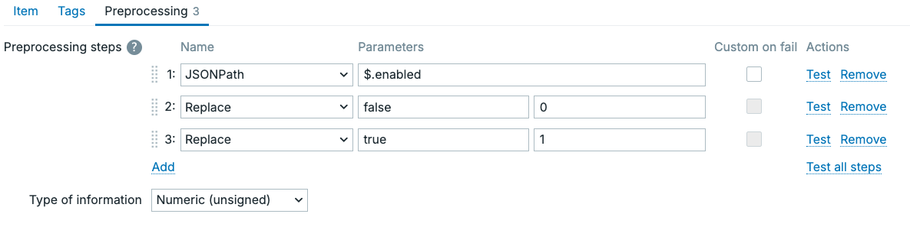
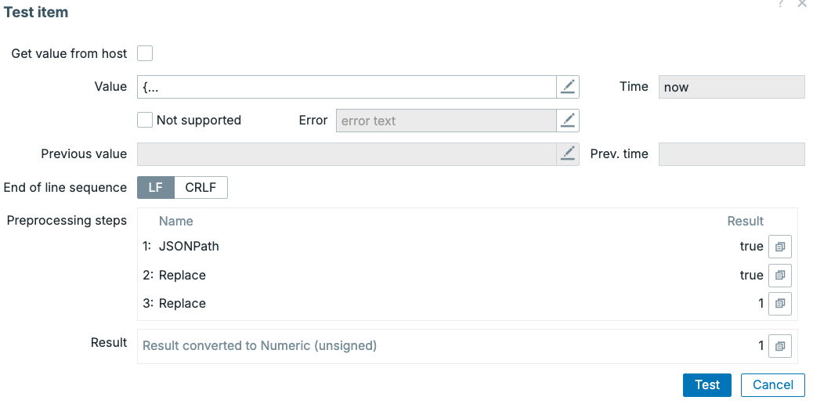
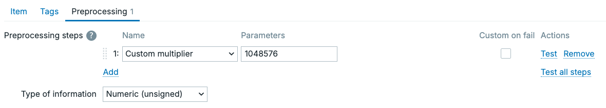
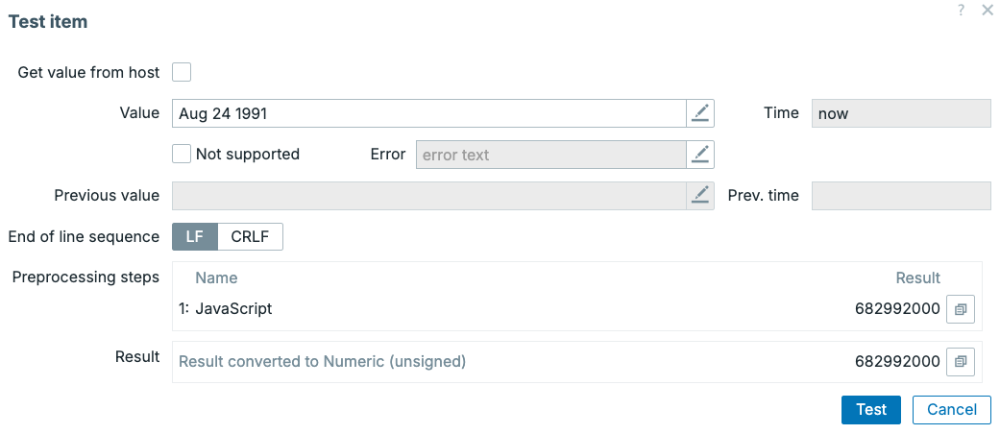

Preprocessing
In the previous part of this book about SNMP polling we started using some preprocessing. We used it to extract data from our bulk collected SNMP items as well as manipulate how the data is stored in our Zabbix database.
Without properly understanding this underlying technical functionality however, we do not have the correct foundation to understand what preprocessing is. As such, let's have a more detailed look into what preprocessing is exactly, how we can use it and why it is such an important part of our Zabbix environment.
Preprocessing functionality
The preprocessing functionality in our Zabbix environment is used to transform received data from our hosts on items. It allows us to process data before it is stored into our Zabbix database, it's right in the name preprocessing. Whenever we configure an item in our Zabbix environment, it's possible for us to apply the preprocessing logic and alter the incoming data.
We do this on the item configuration, under the preprocessing tab of the item we are editing.

4.35 Preprocessing item tab
Here we can add our preprocessing steps by pressing the add button and selecting a step. However, before we dive deeper into how to create our steps let's have a look at exactly what preprocessing does within our Zabbix application.
For our Zabbix monitoring to function as it does, we have to have a collector process running. A process like the Pollers, SNMP Pollers, Trappers and all of the other ones. These processes are in charge of connecting over the network to collect a value using a specific protocol like the Zabbix agent or SNMP. In case of the Trappers, the process is waiting around to receive data instead. They have one thing in common however and that is that at one point data will be received on that process.
When the data is received, Zabbix server or proxy will always send data through the preprocessor. This happens before the data is stored in the Zabbix database and that is why it is called preprocessing. We process the data before we store it in the database.
 4.36 Preprocessing basic functionality
When data is received, Zabbix will internally kick of a few steps. First, it will add the received metric on your item to the preprocessing queue. From the processing queue, the processing manager will find a free preprocessing worker process will be found. One preprocessing worker can handle the preprocessing steps for a single item at the time. Once the preprocessing worker is done, the processed item moves on to the next step in our Zabbix server or proxy processes and the worker is free to handle the next item preprocessing.
Various types of preprocessing
There are several types of preprocessing available, all of which will process and output our data in a different way. This is the current list of preprocessing steps available:
- Regular expression is a simple way (once you understand regex) to extract data.
- Replace is used to replace one value with another, especially useful to replace string with numeric.
- Trim is used to trim characters from both the left and right side at the same time.
- Right trim is used to trim characters from right side.
-
Left trim is used to trim characters from left side.
-
XML XPath is used to extract specific data from XML.
- JSONPath is used to extract specific data from JSON.
- CSV to JSON is used to convert collected CSV data to JSON.
-
XML to JSON is used to convert collected XML data to JSON.
-
SNMP walk value is used to extract a specific SNMP OID from a larger SNMP walk. Also used to format UTF8 or MAC as HEX, as well as BITS as integer.
- SNMP walk to JSON is used to convert an SNMP walk to JSON format (ready for low level discovery).
-
SNMP get value is used to format an SNMP get value in UTF8 or MAC format as HEX, as well as BITS as integer.
-
Custom multiplier is a simple mathematical multiplier, which can also be used to divide.
-
Simple change is a simple calculation to get the difference between the last and previous value.
-
Change per second is a calculation to get the difference between the last and previous value based on the number of seconds that have passed between them.
-
Boolean to decimal is used to convert the aforementioned value.
- Octal to decimal is used to convert the aforementioned value.
-
HExadecimal to decimal is used to convert the aforementioned value.
-
Javascript is an extensive preprocessor, where we can use Javascript Duktape engine to apply complex scripts for processing.
-
In range is used to validate if the value falls within a defined range.
- Matches regular expression is used to validate if the value matches the regular expression.
- Does not match regular expression is used to validate if the value does not match the regular expression.
- Check for error in JSON is used to validate if there are errors in the received JSON.
- Check for error in XML is used to validate if there are errors in the received XML.
- Check for error using regular expression is used to validate if there are errors using an regular expression.
-
Check for not supported value is used to validate if no value could be received.
-
Discard unchanged is used to discard any duplicate values.
-
Discard unchanged with heartbeat is used to discard any duplicate values, but still save it if the heartbeat has passed.
-
Prometheus pattern is used to extract values from prometheus data.
- Prometheus to JSON is used to convert prometheus data to JSON data (ready for low level discovery).
Detailed examples of most important preprocessing
When working with Zabbix, you will find that depending on your environment, some preprocessing steps are used more than others. Some of the most used ones are important to properly understand their functioning.
Regular expression Regular expressions are a whole subject on its own, there are many books on the topic on its own. We won't going over the details here, for that we recommend going to https://regex101.com. On this website you can read extensive documentation about regular expressions, as well as test your existing ones.
Let's start with a basic example, where we have an item that received the value: The error is value: 0. Let's say we want to get numeric value from the string, we could configure our preprocessing like this.
 4.37 Preprocessing regular expression
This would then result in the value 0, which we can store as the Numeric (unsigned) item type of information. The basic functionality of the regular expression preprocessing step as you can see is to extract values from larger data.
JSONPath and additional steps Within Zabbix monitoring, JSON data structures are used quite a lot. We can find it in Low Level Discovery, export files and it is often the data format sent back by API's. As such, being able to process JSON datasets is important and that is where JSONPath comes in. Let's say we have a basic JSON dataset we collected from an API.
Now with JSONpath, we could extract these values. Let's say we want to get the enabled value and store it as a Numeric (unsigned) value. We could do the following.
 4.38 Preprocessing JSONPath
This will extract the value true. However, as a bonus we said we would also to store this extracted value as a Numeric (unsigned) value. To do this, I used an additional 2 preprocessing steps replace. Replacing false with 0 and true with 1. If we press the Test all steps button, we can see the result happen live.
 4.39 Preprocessing JSONPath test
It's important to know that we can add an unlimited amount of preprocessing steps, but that Zabbix will always execute all of them in the order in which they are defined. First, we extract the value from JSON. Second, we try to replace false with 0 which didn't do anything as there was no match. Third, we replace true with 1 which worked. Now all we have to do is apply a value mapping to translate true and false back into human readable format. The big benefit here being that storing these kinds of values as Numeric (unsigned) gives us a lot more trigger functions as options for alerting. It also means we can now store the value in Trend tables, as only Numeric data types are stores as trends.
SNMP walk value
SNMP walk to JSON
Custom multiplier The customer multiplier is simple, but important. In Zabbix you might often find that you receive a value, that you would want to store slightly differently. Specifically, this preprocessing step is often used to convert numbers to their base value. Your device might be giving you MegaBytes (MB) for example, where Zabbix would like us to store Bytes (B) instead.
 4.40 Preprocessing Custom Multiplier
This will now store the received MegaByte value as Bytes. Now, we can set the item Units setting to B and it will convert the Bytes stored to a human readable Mega, Giga, Tera, etc.
Storing base values is always preferred in Zabbix, so we can do the conversion with Units on the item later. This results in a more dynamic setup.
Simple Change and Change per second
We quickly mentioned the Simple Change before, which calculates the difference between Last and Previous value. Change per second goes a step further however by introducing a time based calculation to the formula.
A simple change calculation would look like this.
| Position | Value |
|---|---|
| Last #1 | 9 |
| Last #2 (previous) | 4 |
| ----- | |
| 5 |
We can see the result here is a simple 5, using the formula Last - Previous. In Zabbix the last received value is often indicated by Last #1 and the value before it as Last #2. Next, let's introduce the time based calculation with Change per second, so we see something more difficult.
| Position | Value | Timestamp (Unixtime) | Change per second |
|---|---|---|---|
| Last #1 | 13 | 1763282130 | 7 |
| Last #2 (previous) | 6 | 1763282100 | 30 |
| ---- - | ------------------- - | -------------------- / | |
| 7 | 30 | 0.23333333 |
We can see the calculation is the same in principle, we subtract Last #1 and Last #2. We also takes the Unixtime stamp of when Last #1 and Last #2 were collected, subtracting those. Subtracting those time values gives us the time passed between Last #1 and Last #2. Then the last step is to divide the values, giving us an estimate of how much values were received per second. Of course, the shorter our update interval is, the closer the estimate. But it gives us an accurate average over time.
This kind of calculation works with what we call Counters, values that always increase on our monitoring targets. For example, network interfaces Bits received/sent are often times counters. These work by calculating how much data has passed over the interface in total, often since the last reboot. Often times, a useless metric to us unless we convert it with Change per second when it gives us a nice Bits/s. This allows us to monitor network traffic over time, instead of just a total.
Javascript With many APIs out there being used to make monitoring data available to us, responses are getting more complex. It might happen that you get a response that isn't perfect for us to store in Zabbix. One of my favourite examples is dates and times. Sometimes developers might decide to gives us back a string value with the dates, for example:
- Aug 21 1991
- Aug 24 1991
- May 8 1945
Using Javascript, we could convert these dates into a nice Unixtime stamp. Unixtime is something Zabbix understands as a Unit and can be used in trigger functions.
Example Javascript
// Expecting: "Feb 20 2040"
var months = {
Jan: 0, Feb: 1, Mar: 2, Apr: 3, May: 4, Jun: 5,
Jul: 6, Aug: 7, Sep: 8, Oct: 9, Nov: 10, Dec: 11
};
if (typeof value !== 'string') {
return value;
}
// Split on whitespace
var parts = value.trim().split(/\s+/);
if (parts.length !== 3) {
return value; // or throw, depending on how strict you want to be
}
var monStr = parts[0];
var day = parseInt(parts[1], 10);
var year = parseInt(parts[2], 10);
var month = months[monStr];
if (month === undefined || isNaN(day) || isNaN(year)) {
return value;
}
// Use UTC midnight of that date, convert ms → seconds
var ts = Date.UTC(year, month, day) / 1000;
return ts;
Keep in mind, Zabbix will already put this Javascript code in a function for preprocessing as function (value) { }. When testing this code, we can see it executed for us now, converting out weird date format into a nice Unixtime.
 4.41 Preprocessing Javascript
Discard unchanged with heartbeat
Shortly, I'd also like to discuss the Discard unchanged with heartbeat preprocessing in more detail. Let's say we set up our preprocessing step Discard unchanged with heartbeat with a heartbeat value of 5m. We might see the following happen.
| Value | Timestamp | Stored value? | | :---- | :-------- | | 0 | Now | No | 0 | 1m ago | Yes | 1 | 2m ago | Yes | 1 | 3m ago | No | 1 | 4m ago | No | 1 | 5m ago | No | 1 | 6m ago | No | 1 | 7m ago | No | 1 | 8m ago | Yes | 0 | 9m ago | Yes
We can see that we only store the value if it changes from 0 to 1 or from 1 to 0 in this case. However, at the 2m ago timestamp we can see an exception. This specific value had passed the 5 minute heartbeat interval, meaning we store this value even though it had not changed yet. This can be used to make sure we still save a value from time to time, which can be useful for data integrity or crafting your trigger expressions later on.
Conclusion
As we can see preprocessing can be used to turns raw received data into structured, meaningful monitoring data. Once you the various different types of preprocessing your Zabbix environment becomes cleaner and more powerful. It's useful to familiarise yourself with the various options in preprocessing, although we do not need to know all of them in detail. Different situations call for different types of preprocessing, so it's good to at least know of the existence of most of them. The Zabbix documentation also includes more details, as well as various examples.